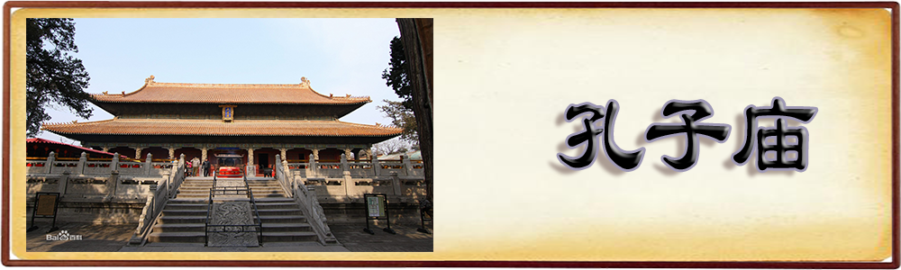

|  |
由于孔子创立的儒家思想对于维护文化所起到的重要作用，孔庙便被古代帝王所器重。其数量之多、规制之高，建筑技术与艺术之精美，在我国古代建筑类型中，堪称是最为突出的一种，是我国古代文化遗产中极其重要的组成部分。
以下孔庙概述引自君友会王爱君文献孔庙篇，孔庙，祭祀孔子的庙，称为孔庙或孔子庙，又称先圣庙、宣尼庙、宣圣庙、文宣王庙、圣庙、圣堂、文庙、大成殿等。孔子死于鲁哀公十六年（公元前四七九年），翌年，哀公于孔子旧宅立庙守茔，是为孔子立庙之始，也是今日山东曲阜阙里孔庙的由来。礼记上说：“凡始立学者，必释奠于先圣先师。”唐以前，所谓先圣，或指周公或指孔子；唐以后，则专指孔子，所以孔庙又有先圣庙之称。汉平帝时，追谥孔子为宣尼公，所以孔庙又称为宣尼庙，南梁以后，又有宣圣庙之称。唐玄宗时，追谥为文宣王，又称为文宣王庙。至明永乐以后，又称为文庙。民国三年，改称为孔子庙。
从史记可知曲阜孔庙收藏有孔子衣冠琴车书等遗物，后汉桓帝时置官管理。其后，历代修补扩建，到宋真宗时，已有三百六十间。今日所见的孔庙，大部分是雍正年间的建筑物，东西一百五十公尺，南北六百三十公尺，是中国最大的庙宇建筑。其规模包括大成殿、杏坛、寝殿、圣迹殿、后土祠、神庖、瘗所、神厨、崇圣祠、家庙、诗礼堂、启圣祠、金丝堂、乐器库、奎文阁、东西直房、斋宿所、璧水桥、仰高门、棂星门等。
中央官学之内建置孔庙，始于北魏孝文帝之际。在此之前，如前汉之际，祀孔未出阙里，后汉以后，虽已在太学举行对孔子的释奠之礼，但无庙宇的建筑。地方官学之内建置孔庙，始于北齐文宣帝时代。但是从中央到地方官学确实普建孔庙，则要到唐太宗以后。唐太宗对官学内的孔子庙制，有几项重要建树：一是确立孔子为先圣的地位；二是建立从祀制，在此之前，若以孔子为先圣，祇以颜渊为先师配享；从太宗以后，再择左丘明以下二十二先儒从祀庙庭。玄宗时从祀者增为十哲、七十二子、二十一贤。宋以后到明清，从祀制定为配位（有四配）、哲位、先贤、先儒；哲位以下的人数，随时代而递增，分列在东西两庑。自唐以后，从祀孔庙之制，遂成为文人学者最高的荣誉。从祀的标准，依清代的规定是：“阐明圣学，传授道统。”这是传统中国文化很重要的特质。
从唐代以后，除曲阜孔庙以外，孔庙不但成为学校不可分割的一部分，而且是学校的中心地；释奠之礼是国家大典，属于中祀；教师的地位，透过孔子庙制而神圣化；教育理想也透过孔子庙制而具体化。因此，孔庙的存在，教育意义重于政治或宗教意义。学校孔庙的建筑属于宫殿式，庙宇朝南，基本上仿自曲阜孔庙，可分为南北两类：南方式建筑，以木材为主，装饰复杂，屋脊两端翘起；北方式建筑较为朴素，水平式屋脊，枓栱变化少。主要的建筑物，包括大成殿、崇圣祠、东西庑、明伦堂、棂星门、泮池等。这种孔庙制也影响到东亚诸国，构成：“东亚世界：极重要的特质之一。今日韩国、日本、越南等地所见的孔庙，就是昔日官学的残影。
| @2018，版权所有：儒家文化 |